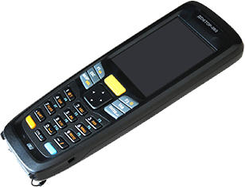

Мобильный прибор диагностики электрических машин и аппаратов «Доктор-060RLC»

НАЗНАЧЕНИЕ И ОБЛАСТЬ ПРИМЕНЕНИЯ
Мобильный прибор диагностики электрических машин и аппаратов «Доктор-060RLC» предназначен для выявления
дефектов в обмотках различного электрооборудования.
ФУНКЦИОНАЛЬНЫЕ ВОЗМОЖНОСТИ
«Доктор-060RLC» относится к ручному оборудованию. Питание прибора осуществляется от встроенных аккумулятор-
ных батарей, зарядка которых предусмотрена от сети переменного тока напряжением 220 В, 50 Гц через блок питания,
входящий в комплект поставки. Для подключения к диагностируемому оборудованию «Доктор-060RLC» комплектуется
специальным щупом с зажимами типа «крокодил».
«Доктор-060RLC» позволяет производить измерение (вычисление) и оценивать в соответствии с нормированными зна-
чениями следующие параметры диагностируемого оборудования:
- фактор потерь (тангенс угла диэлектрических потерь), который характеризует потери, вызываемые токами прово-
димости в изоляции, несоответствие данного параметра нормативному, свидетельствует об увлажнении, местном
разрушении или загрязнении изоляции;
- добротность (величина обратная фактору потерь), измерение которой наиболее рационально при контроле нали-
чия межвитковых замыканий, ухудшения изоляционных свойств обмоток;
- емкость, позволяет оценивать качество изоляции: степень увлажнения изоляции, загрязнение, местное разруше-
ние и ухудшение характеристик масла;
- индуктивность, измеряется для контроля состояния катушек электрических аппаратов, выявления межвитковых
замыканий и обрывов;
- сопротивление (активное) катушек (обмоток) контролируется на соответствие заводским нормам и требованиям
«Правил ремонта и ТО электрических аппаратов».
ТЕХНИЧЕСКИЕ ХАРАКТЕРИСТИКИ
| Параметры |
Значение |
| Габаритные размеры, мм |
250 х 132 х 50 |
| Потребляемая мощность, Вт |
0.1 |
| Масса, кг |
1.0 |